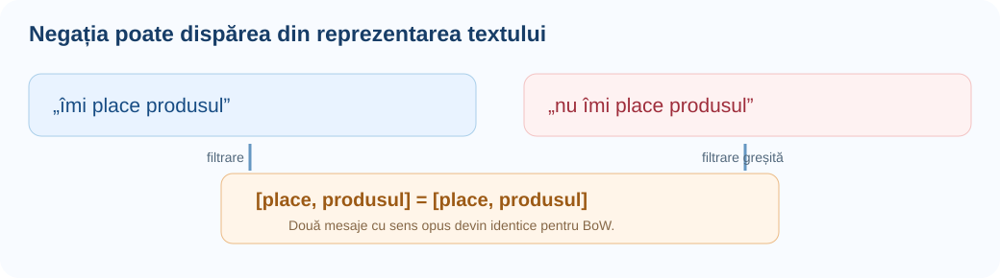
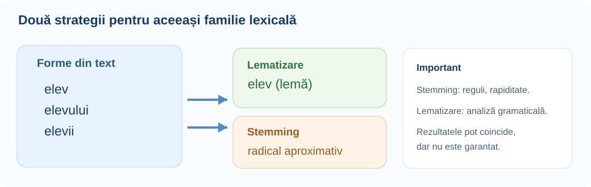

Preprocesarea lexicală explicată pas cu pas: ce informație eliminăm, cum reducem formele flexionare, ce biblioteci folosim și cum verificăm dacă transformările chiar îmbunătățesc clasificarea textului.
1. Problema vocabularului → 2. Stopwords și negații → 3. Stemming în română → 4. Lematizare cu modele → 5. Integrare scikit-learn → 6. Evaluare și alegere.
Familia unor cuvinte poate genera multe caracteristici distincte.
Un model care primește text nu „vede” noțiunea de cuvânt în sensul uman. Într-o reprezentare Bag-of-Words, forme precum elev, elevului și elevii pot ocupa coloane separate. Dacă avem puține date, fiecare formă poate fi rară; dacă le grupăm inteligent, modelul poate învăța mai bine un tipar comun.
Există însă și reversul: în „nu recomand”, cuvântul nu are un rol mult mai important decât frecvența lui. O metodă care elimină automat cuvintele frecvente poate distruge tocmai informația necesară predicției. Preprocesarea este o alegere experimentală, nu o rețetă universală.
Să poți explica transformarea, să o implementezi, să interpretezi ce informație se pierde și să verifici printr-un experiment dacă îmbunătățește într-adevăr modelul.
Frecvența mare nu înseamnă întotdeauna inutilitate.
O stopword este un termen pe care alegem să nu îl păstrăm ca trăsătură în anumite reprezentări textuale. Exemple de candidați: și, la, este, de. Lista poate fi generală sau specifică domeniului. Pentru un corpus de anunțuri comerciale, termeni precum „ofertă” pot fi foarte frecvenți, însă tocmai ei pot ajuta la o sarcină de detecție a reclamelor.
Distingem două noțiuni: frecvența totală TF — câte apariții are termenul în toate documentele — și document frequency DF — în câte documente diferite apare. Un termen poate apărea de multe ori într-un singur text, fără să fie comun întregului corpus. Acesta este și motivul pentru care max_df lucrează cu frecvența în documente, nu cu numărul total de apariții.
| Termen | TF total | DF (din 4 doc.) | Decizie posibilă |
|---|---|---|---|
| și | 9 | 4 | Candidat la eliminare, dacă nu schimbă sensul. |
| nu | 5 | 3 | Îl păstrăm în analiza sentimentelor. |
| tenis | 4 | 2 | Probabil relevant pentru clasificarea sportului. |
| cod | 3 | 1 | Rar, dar posibil decisiv pentru un subiect tehnic. |
O listă de stopwords se evaluează pe scopul concret al modelului. Negațiile, expresiile de timp, numerele, pronumele sau particulele pot fi informații utile.
Construirea manuală a unei liste și filtrarea tokenilor.
Pentru un text deja tokenizat, algoritmul este simplu: parcurgi fiecare token și îl adaugi în rezultat numai dacă nu este în mulțimea de cuvinte eliminate. Mulțimea Python set este potrivită pentru verificări repetate ale apartenenței. Înainte de filtrare trebuie să aplici aceeași regulă de normalizare și asupra tokenilor și asupra listei de stopwords.
texte = ["Nu este bun produsul", "Este bun produsul"] stopwords = {"este", "produsul", "și", "la"} negatii = {"nu", "nici", "fără"} for text in texte: tokeni = text.casefold().split() filtrati = [t for t in tokeni if t not in stopwords or t in negatii] print(text, "->", filtrati)
Rezultatul păstrează „nu” și permite diferențierea celor două mesaje.
from collections import Counter documente = [ "elevii rezolvă probleme și scriu cod", "profesorii explică probleme de cod", "elevii învață limbajul python" ] df = Counter() for document in documente: termeni_distincti = set(document.casefold().split()) df.update(termeni_distincti) for termen, numar in sorted(df.items()): print(f"{termen:15s} apare în {numar} document(e)")
Fiecare cuvânt contribuie o singură dată per document, deoarece folosim un set.
O listă manuală de stopwords care conține forma îmi nu elimină automat formele cu ortografii sau diacritice diferite. Normalizarea trebuie să fie consecventă.
Diferența dintre stop_words, max_df și min_df.
CountVectorizer și TfidfVectorizer pot elimina stopwords prin parametrul stop_words. Valoarea "english" este o listă internă pentru engleză, nu pentru română. Pentru română poți folosi o colecție de termeni proprie sau, în multe cazuri, max_df pentru a filtra automat termeni care apar în aproape toate documentele de antrenare.
from sklearn.feature_extraction.text import CountVectorizer documente = [ "nu este bun acest produs", "este bun acest produs", "nu este recomandat acest produs" ] stop = ["este", "acest"] fara_filtru = CountVectorizer() cu_filtru = CountVectorizer(stop_words=stop) X0 = fara_filtru.fit_transform(documente) X1 = cu_filtru.fit_transform(documente) print("Vocabular inițial:", fara_filtru.get_feature_names_out()) print("După filtrare:", cu_filtru.get_feature_names_out()) print("Dimensiuni:", X0.shape, X1.shape)
Atenție: vocabularul se construiește numai din train. Documentele de validare se procesează cu transform(), nu fit_transform().
from sklearn.feature_extraction.text import TfidfVectorizer corpus = [ "tenis sport meci", "sport fotbal stadion", "sport înot bazin", "sport tenis turneu" ] v = TfidfVectorizer(max_df=0.75, min_df=1) X = v.fit_transform(corpus) print(v.get_feature_names_out()) print(X.shape)
Termenul „sport” apare în toate cele patru documente, deci este eliminat de max_df=0.75.
| Parametru | Ce înseamnă | Exemplu | Atenție |
|---|---|---|---|
stop_words | Listă explicită de termeni excluși | ["și", "la"] | Nu elimina negațiile fără testare. |
max_df | Numărul / proporția maximă de documente în care poate apărea termenul | 0.90 | Pe corpusuri mici poate elimina termeni utili. |
min_df | Numărul / proporția minimă de documente care conțin termenul | 2 | Poate elimina tocmai cuvintele rare importante. |
token_pattern | Regula de tokenizare în modul „word” | implicit: min. 2 caractere | Tokeni de un caracter dispar implicit. |
ngram_range | Intervalul lungimilor de n-grame | (1, 2) | Bigramele surprind expresii precum „nu este”. |
De ce o propoziție pozitivă poate deveni identică uneia negative.
Să comparăm mesajele „Îmi place produsul” și „Nu îmi place produsul”. Dacă eliminăm automat nu, îmi și alte cuvinte frecvente, obținem în ambele cazuri reprezentări aproape identice. Un model Bag-of-Words nu mai poate distinge sentimentul folosind informația pe care am șters-o.

from sklearn.feature_extraction.text import CountVectorizer texte = ["nu îmi place", "îmi place"] v1 = CountVectorizer(token_pattern=r"(?u)\b\w+\b") v2 = CountVectorizer( token_pattern=r"(?u)\b\w+\b", stop_words=["nu", "îmi"] ) print(v1.fit_transform(texte).toarray()) print(v1.get_feature_names_out()) print(v2.fit_transform(texte).toarray())
Compară rândurile celor două matrici; după eliminarea negației ele devin identice.
În clasificarea sentimentelor începe prin a păstra negațiile și a încerca ngram_range=(1, 2). Dacă elimini stopwords, verifică separat exemplele cu „nu”, „nici” și „fără”.
Radical aproximativ, nu neapărat formă de dicționar.
Stemmingul reduce un cuvânt la o formă aproximativă folosind reguli, frecvent legate de sufixe. Algoritmul nu trebuie să înțeleagă sintaxa propoziției. Două forme diferite pot ajunge la același radical, dar acest radical poate să nu fie un cuvânt românesc corect.
Este util atunci când avem multe variante flexionare și vrem să limităm vocabularul cu cost mic de preprocesare. Dar poate produce două erori: overstemming (cuvinte cu sens diferit ajung la același radical) și understemming (variante ale aceluiași cuvânt rămân distincte).
| Aspect | Stemming | Lematizare |
|---|---|---|
| Rezultat | Radical algoritmic aproximativ | Formă de dicționar estimată |
| Context | Adesea nu este folosit | Poate influența analiza |
| Cost | De regulă mai mic | De regulă mai mare |
| Exemplu | Forme ale aceluiași verb pot avea același stem | mergeam → merge (într-un context potrivit) |
| Risc | Supracomprimare / subcomprimare | Greșeli ale analizei gramaticale |
Dacă două cuvinte capătă același stem, nu rezultă că sunt sinonime. Stemmingul este o operație de normalizare lexicală, nu o metodă de înțelegere semantică.
Un exemplu real, reproductibil, nu o simulare cu tăiere de sufixe.
Biblioteca NLTK include SnowballStemmer("romanian"). Într-un proiect real nu trebuie să rescrii tu regulile limbii române pentru fiecare variantă. Pentru comparație este util și PorterStemmer, dar acesta este destinat englezei, deci nu îl aplicăm textelor românești.
# Instalare: pip install nltk from nltk.stem.snowball import SnowballStemmer stemmer = SnowballStemmer("romanian") cuvinte = ["copil", "copilului", "copiii", "cărțile", "cărților", "frumoase"] for cuvant in cuvinte: print(f"{cuvant:14s} -> {stemmer.stem(cuvant)}")
Rezultatele sunt radicali algoritmici; nu presupune că sunt leme corecte.
from nltk.stem.snowball import SnowballStemmer corpus = ["elevii citesc cărți", "elevului îi plac cărțile", "elevii învață"] stemmer = SnowballStemmer("romanian") tokens = [d.casefold().split() for d in corpus] vocab_initial = set(t for document in tokens for t in document) vocab_stem = set(stemmer.stem(t) for document in tokens for t in document) print("Inițial:", sorted(vocab_initial)) print("Stemming:", sorted(vocab_stem)) print("Dimensiuni:", len(vocab_initial), len(vocab_stem))
Compară dimensiunile și inspectează ce forme au fost reunite.
Stemmingul nu separă sensurile contextuale ale unui cuvânt. Pentru o problemă în care înțelegerea relațiilor gramaticale este decisivă, ia în considerare lematizarea ori reprezentări care păstrează contextul.
De ce POS și morfologia sunt importante.
Lema este o formă canonică, de dicționar, asociată unei unități lexicale. O lematizare bună poate reuni, de exemplu, elevii și elevului sub lema elev. Pentru verbe, forme precum mergeam se pot reduce la infinitivul merge.
Dar lema depinde uneori de rolul gramatical și de context. De aceea, lematizatoarele performante utilizează etichete POS (part of speech) și informații morfologice. O simplă listă de înlocuiri „copiii → copil” nu reprezintă lematizare generală și poate greși în texte necunoscute.

Sufixul nu spune singur totul despre sens. Cuvintele omonime și formele ambigue sunt un motiv important pentru care lematizarea se bazează deseori pe modele lingvistice.
Instalare, model antrenat, token.lemma_, token.pos_.
În spaCy, spacy.load("ro_core_news_sm") încarcă un model preantrenat pentru română, cu componente pentru etichetare gramaticală și lematizare. Un obiect creat cu spacy.blank("ro") nu oferă automat aceeași analiză; el este doar o configurație lingvistică de bază.
# Instalare în terminal: # pip install spacy # python -m spacy download ro_core_news_sm import spacy nlp = spacy.load("ro_core_news_sm") text = "Copiii citeau cărți interesante și mergeau spre bibliotecă." doc = nlp(text) for tok in doc: if not tok.is_space: print(f"{tok.text:16s} {tok.pos_:8s} {tok.lemma_}")
Coloana POS indică categoria gramaticală folosită de model; lemma_ este estimarea sa.
import spacy nlp = spacy.load("ro_core_news_sm") text = "Elevii talentați citesc cărți interesante în bibliotecă." doc = nlp(text) rezultat = [ tok.lemma_.casefold() for tok in doc if tok.is_alpha and tok.pos_ in {"NOUN", "VERB", "ADJ"} ] print(rezultat)
Aceasta este o alegere pentru o sarcină specifică; la sentiment, eliminarea anumitor clase gramaticale poate fi dăunătoare.
tok.text este forma inițială, tok.lemma_ lema, tok.pos_ categoria gramaticală, tok.is_alpha indică dacă tokenul conține doar litere, iar tok.is_stop folosește o listă de stopwords a limbii. Ultima nu trebuie considerată neapărat potrivită pentru obiectivul ONIA.
O alternativă care oferă tokenize, pos, lemma.
Stanza este o bibliotecă separată care poate rula un flux cu tokenizare, etichetare gramaticală și lematizare. Modelele se descarcă o dată, apoi pot fi folosite local. Pentru română alegem explicit "ro" și procesoarele necesare.
# Instalare: pip install stanza import stanza stanza.download("ro") # o singură dată, când există acces la internet nlp = stanza.Pipeline("ro", processors="tokenize,pos,lemma", use_gpu=False) doc = nlp("Elevii au rezolvat problemele și au discutat soluțiile.") for prop in doc.sentences: for cuvant in prop.words: print(f"{cuvant.text:15s} {cuvant.upos:7s} {cuvant.lemma}")
Stanza lucrează cu obiecte Sentence și Word; câmpul upos are eticheta universală POS.
| Soluție | Ce instalezi | Cum obții lema | Recomandată când |
|---|---|---|---|
| spaCy | spacy + ro_core_news_sm | tok.lemma_ | Vrei integrare rapidă într-un pipeline Python. |
| Stanza | stanza + resurse pentru ro | word.lemma | Ai nevoie de procesare morfosintactică explicită. |
| Snowball | nltk | stemmer.stem(word) | Vrei stemming rapid, nu lematizare. |
Cum definim tokenizer sau analyzer fără a pierde etapele utile.
Odată ce ai un lematizator, poți transforma fiecare text într-o listă de leme. TfidfVectorizer poate primi un analyzer personalizat care returnează direct termenii de folosit ca trăsături. Dar atenție: dacă analyzer este o funcție, el înlocuiește întregul flux implicit de preprocesare, tokenizare și n-grame; opțiuni precum stop_words și ngram_range nu mai funcționează în același mod ca pentru analyzer="word".
import spacy from sklearn.feature_extraction.text import TfidfVectorizer nlp = spacy.load("ro_core_news_sm") def leme(text): doc = nlp(text) return [tok.lemma_.casefold() for tok in doc if tok.is_alpha] train = ["Elevii citesc cărțile", "Elevul citește manualele", "Copiii au cărți"] vec = TfidfVectorizer(analyzer=leme) X_train = vec.fit_transform(train) X_nou = vec.transform(["Elevul a citit cartea"]) print(vec.get_feature_names_out()) print(X_train.shape, X_nou.shape)
fit_transform pe train; transform pe documentele noi. Lema este calculată de spaCy în ambele cazuri.
import spacy from sklearn.feature_extraction.text import TfidfVectorizer nlp = spacy.load("ro_core_news_sm") def tokenizer_lematizat(text): return [tok.lemma_.casefold() for tok in nlp(text) if tok.is_alpha] vec = TfidfVectorizer( tokenizer=tokenizer_lematizat, token_pattern=None, lowercase=False, ngram_range=(1, 2), min_df=1 ) X = vec.fit_transform(["Nu este bun", "Este bun produsul"]) print(vec.get_feature_names_out())
Folosim tokenizer, nu analyzer, astfel încât vectorizatorul să construiască n-gramele.
Modelele lingvistice necesită instalare locală. Transformarea trebuie aplicată identic pe train și test. Dacă faci multe experimente, poți salva/precalcula lemele pentru a reduce timpul, dar fără a utiliza etichetele de validare în alegerea regulilor.
Nu orice reducere a vocabularului produce un scor mai bun.
Pentru recenzii scurte, păstrarea negațiilor și a bigramelor este deseori mai importantă decât eliminarea cuvintelor frecvente. Pentru știri lungi, stemmingul poate reduce vocabularul, dar poate fuziona termeni care exprimă sensuri diferite. Pentru limbaje tehnice, eliminarea numerelor și a codurilor de produs poate fi o eroare. Pentru modele cu n-grame de caractere, stemmingul poate aduce un avantaj mic sau chiar negativ.
| Situație | Ce testezi întâi | Ce poți evita | De ce |
|---|---|---|---|
| Sentiment din recenzii scurte | Fără stopwords + bigrame | Eliminarea lui „nu” | Polaritatea depinde de negație. |
| Clasificarea știrilor | TF-IDF simplu vs. stemming | Lematizare costisitoare prea devreme | Multe cuvinte indicative pot fi suficiente. |
| Texte în română, forme flexionare | Lematizare spaCy/Stanza | Reguli improvizate de sufixe | Lema poate reuni forme corecte. |
| Spam și coduri comerciale | Păstrarea URL/numere ca semnal | Ștergerea tuturor cifrelor | Codurile pot identifica intenția. |
| Text cu greșeli de tastare | N-grame de caractere | Exclusiv tokenizare de cuvinte | Fragmentele de caractere sunt robuste. |
| Modele neurale preantrenate | Tokenizerul propriu modelului | Stemming și filtrare agresivă | Modelul a fost antrenat pe o anumită distribuție de intrări. |
Alegem preprocesarea prin validare, nu după intuiție.
Un experiment bun schimbă o singură componentă odată. Împarți datele în train și validation (sau folosești cross-validation), alegi o metrică potrivită și compari pipeline-uri identice, cu excepția preprocesării. Pentru clasificarea multiclasa cu clase dezechilibrate, macro-F1 este deseori mai relevant decât accuracy.
from sklearn.pipeline import Pipeline from sklearn.feature_extraction.text import TfidfVectorizer from sklearn.linear_model import LogisticRegression from sklearn.model_selection import StratifiedKFold, cross_val_score X = [ "tenis meci sport", "sport fotbal stadion", "victorie tenis sport", "cod python algoritm", "python date cod", "programare algoritm date", "meci de fotbal", "turneu de tenis", "rezultat sportiv", "bibliotecă python", "date și cod", "problemă de programare" ] y = [0, 0, 0, 1, 1, 1, 0, 0, 0, 1, 1, 1] cv = StratifiedKFold(n_splits=3, shuffle=True, random_state=42) for stop in [None, ["de", "și"]]: pipe = Pipeline([ ("tfidf", TfidfVectorizer(stop_words=stop, ngram_range=(1, 2))), ("clf", LogisticRegression(max_iter=1000)) ]) scoruri = cross_val_score(pipe, X, y, cv=cv, scoring="f1_macro") print("Stopwords:", stop, "macro-F1 mediu:", round(scoruri.mean(), 3))
Datele sunt foarte mici și sintetice, așadar scorurile sunt didactice, nu dovezi despre performanța reală.
from sklearn.pipeline import Pipeline from sklearn.feature_extraction.text import TfidfVectorizer from sklearn.svm import LinearSVC from sklearn.model_selection import GridSearchCV, StratifiedKFold X = ["tenis sport", "fotbal meci", "turneu de tenis", "sport echipă", "python date", "cod algoritm", "date python", "probleme algoritm"] y = ["sport"] * 4 + ["tech"] * 4 pipe = Pipeline([ ("tfidf", TfidfVectorizer()), ("model", LinearSVC()) ]) param_grid = { "tfidf__ngram_range": [(1, 1), (1, 2)], "tfidf__stop_words": [None, ["de"]], "model__C": [0.1, 1.0] } cv = StratifiedKFold(n_splits=2, shuffle=True, random_state=42) search = GridSearchCV(pipe, param_grid, cv=cv, scoring="f1_macro") search.fit(X, y) print(search.best_params_)
Prefixul nume_pas__parametru selectează parametrii etapelor Pipeline. Cu date reale folosește mai multe exemple/fold și analiză de erori.
Nu folosi scorul public drept singura validare. Repetarea multor încercări după leaderboard poate produce overfitting la partea publică. Ai nevoie de o împărțire de validare proprie și de experimente reproductibile.
Pipeline complet și analiză minimă a erorilor.
Construim un model de clasificare binară pe recenzii românești. Scopul este să vedem cum preprocesarea se combină cu vectorizarea, clasificatorul și evaluarea. Textul este simplu, iar setul mic; într-o competiție reală ar trebui multe observații și o validare mult mai robustă.
from sklearn.pipeline import Pipeline from sklearn.feature_extraction.text import TfidfVectorizer from sklearn.linear_model import LogisticRegression recenzii = [ "produs foarte bun", "excelent și util", "îmi place foarte mult", "recomand acest produs", "calitate bună", "merită cumpărat", "produs foarte slab", "nu recomand", "nu îmi place", "calitate proastă", "nu este bun", "experiență dezamăgitoare" ] etichete = [1] * 6 + [0] * 6 model = Pipeline([ ("tfidf", TfidfVectorizer(ngram_range=(1, 2), min_df=1)), ("clf", LogisticRegression(max_iter=1000, random_state=42)) ]) model.fit(recenzii, etichete) probe = ["nu recomand deloc", "foarte bun și util"] for text, pred in zip(probe, model.predict(probe)): print(text, "->", "pozitiv" if pred == 1 else "negativ")
Acest exemplu arată modul de folosire a API-ului; nu reprezintă o evaluare științifică a sentimentului.
Pentru analiza erorilor, păstrează exemplele clasificate greșit și inspectează dacă motivul este negația, un cuvânt necunoscut, contextul insuficient sau o etichetă greșită. Dacă observi multe erori cu „nu”, testează bigramele și o listă de stopwords care păstrează explicit negațiile.
Ghid sintetic: cum alegem dintre variante.
| Componentă / parametru | Ce controlează | Valoare de început | Când îl modifici |
|---|---|---|---|
TfidfVectorizer(stop_words=...) | Eliminarea unei liste de tokeni | None | Doar după analiza termenilor foarte frecvenți. |
TfidfVectorizer(max_df=...) | Filtrare după frecvența în documente | 1.0 | Dacă există termeni aproape universali. |
TfidfVectorizer(min_df=...) | Filtrarea termenilor foarte rari | 1 | Când corpusul este mare și rarele produc zgomot. |
TfidfVectorizer(ngram_range=...) | Unigrame, bigrame, trigrame | (1, 2) | La negații sau expresii scurte. |
TfidfVectorizer(analyzer=...) | Cuvinte/caractere ori analizor propriu | "word" | "char_wb" pentru typo; callable pentru leme. |
TfidfVectorizer(tokenizer=...) | Tokenizare personalizată | None | Când ai un tokenizer sau lematizator extern. |
SnowballStemmer("romanian") | Stemming prin reguli | română | Când vrei variantă simplă și rapidă. |
spacy.load("ro_core_news_sm") | Lematizare cu model preantrenat | sm | Când urmărești normalizare lingvistică. |
stanza.Pipeline(...) | Tokenizare, POS și lematizare | tokenize,pos,lemma | Când ai nevoie de ieșire morfosintactică detaliată. |
Pentru ONIA poți începe cu TfidfVectorizer(ngram_range=(1,2), min_df=1) + LogisticRegression(max_iter=1000), fără eliminarea stopwords. Compară apoi numai o schimbare odată: stopwords, stemming, lematizare sau n-grame de caractere.
Ce să poți explica înainte de a rezolva o problemă.
spacy.blank("ro") nu are automat lematizare antrenată.stop_words="english" nu este potrivit pentru un corpus românesc.ngram_range încă se aplică.Verificare personală: poți descrie intrarea, transformarea și ieșirea pentru fiecare etapă? Poți arăta un exemplu în care ea ajută și unul în care dăunează? Poți explica modul de integrare într-un Pipeline și ce trebuie fit-uit numai pe train? Dacă da, ai instrumentele necesare pentru a aborda problemele NLP clasice de competiție.
NLTK — SnowballStemmer (inclusiv limba română); spaCy — modelele pentru română; Stanza — modele și descărcare; scikit-learn — TfidfVectorizer. Codul și exemplele educaționale sunt ilustrative; evaluările cu corpusuri mici nu sunt scoruri de competiție.